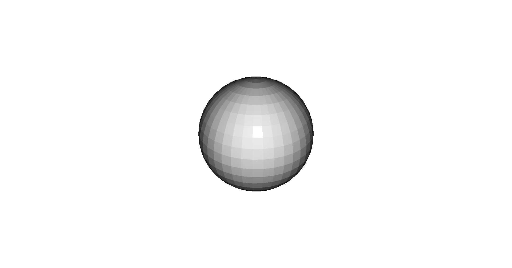

Note
Click here to download the full example code
Add and Remove Artist¶
A demonstration of how previously added artists can be removed.
import os
from pytransform3d.urdf import UrdfTransformManager
import pytransform3d.visualizer as pv
BASE_DIR = "test/test_data/"
data_dir = BASE_DIR
search_path = "."
while (not os.path.exists(data_dir) and
os.path.dirname(search_path) != "pytransform3d"):
search_path = os.path.join(search_path, "..")
data_dir = os.path.join(search_path, BASE_DIR)
tm = UrdfTransformManager()
with open(data_dir + "simple_mechanism.urdf", "r") as f:
tm.load_urdf(f.read(), mesh_path=data_dir)
tm.set_joint("joint", -1.1)
fig = pv.figure()
# add graph, box, and sphere
graph = fig.plot_graph(
tm, "lower_cone", s=0.1, show_frames=True,
whitelist=["upper_cone", "lower_cone"],
show_connections=True, show_visuals=True, show_name=False)
box = fig.plot_box([1, 1, 1])
sphere = fig.plot_sphere(2)
# remove graph and box
fig.remove_artist(graph)
fig.remove_artist(box)
# add and remove box again
box.add_artist(fig)
fig.remove_artist(box)
fig.view_init()
fig.set_zoom(1.2)
if "__file__" in globals():
fig.show()
else:
fig.save_image("__open3d_rendered_image.jpg")
Total running time of the script: ( 0 minutes 0.127 seconds)